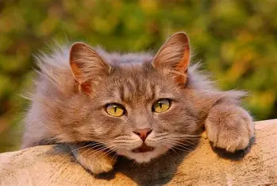

The Types Of Cats!
Abyssinian: Known for their ticked coat and playful nature. Bengal: Recognized for their striking leopard-like spots and energetic personality. British Shorthair: A sturdy breed with a dense coat and a calm demeanor. Maine Coon: One of the largest domesticated breeds, known for their friendly and sociable nature. Persian: Famous for their long, luxurious fur and sweet temperament. Ragdoll: Known for their docile and affectionate nature, often going limp when picked up. Siamese: Recognized for their striking blue eyes and vocal personality. Sphynx: A hairless breed known for their unique appearance and affectionate nature. Scottish Fold: Known for their distinctive folded ears and sweet disposition. Norwegian Forest Cat: A large, fluffy breed with a friendly and playful personality.

Considerations for Choosing a Cat Breed: Temperament: Consider your lifestyle and the temperament of the breed. Some cats are more independent, while others require more attention and companionship. Grooming Needs: Long-haired breeds like Persians require regular grooming, while short-haired breeds may need less maintenance.Activity Level: Some breeds, like the Maine Coon, are more playful and active, while others may prefer a more relaxed environment.Choosing the right cat breed can enhance your experience as a pet owner, ensuring a happy and fulfilling relationship with your feline friend. Always consider adopting from shelters, as many wonderful cats of all breeds are looking for homes.